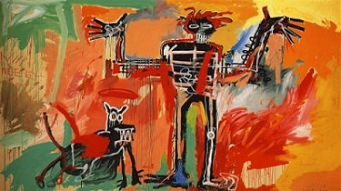

Boy and Dog in a Johnnypump
Jean-Michel Basquiat · 1982 · Oil on canvas · 243.8 × 416.6 cm · Private collection
In copyright. Look and learn: shown for study, not for download.
The canvas is nearly fourteen feet wide and eight feet high. Johnny pump is New York slang for a fire hydrant opened in summer for children to play in. Ken Griffin bought it from the collector Peter Brant in 2020 for more than $100 million, then the second highest price paid for a Basquiat. In 2017 Banksy painted a tribute to it outside the Barbican Centre in London.